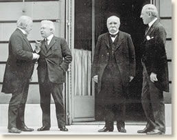
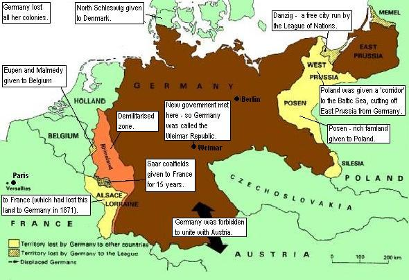

IB Docs (2) Team
IB Docs (2) Team

3. La Primera Guerra Mundial: los efectos
Esta página analiza los problemas que enfrentaron los pacificadores en 1918 y el impacto del asentamiento de Versalles.
Preguntas orientadoras:
¿Cuáles fueron los efectos de la Primera Guerra Mundial?
¿Cuál fue el impacto internacional de la guerra?
¿Qué problemas enfrentaron los pacificadores en 1918?
¿Fue el Tratado de Versalles un acuerdo justo y viable?
¿Fue el Acuerdo de Versalles en su conjunto un acuerdo defectuoso?
¿Cómo afectó la guerra a los acontecimientos políticos, sociales y económicos de los años 20?
1. ¿Cuáles fueron los efectos de la Primera Guerra Mundial?
Actividad de inicio:
Lee el resumen de los efectos de la Primera Guerra Mundial en Europa a continuación. Elabora un mapa mental breveo una infografía para mostrar los puntos principales. (Más adelante añadirás información a este mapa mental)
Después de la firma de los armisticios con las potencias centrales en noviembre de 1918, los vencedores se reunieron en Versalles, cerca de París, en 1919 para discutir y acordar los términos de un acuerdo de paz. Europa estaba sumida en una situación caótica. 10 millones de personas habían muerto en la guerra, había hambruna y una epidemia de gripe letal. También hubo una amplia devastación física que tuvo graves consecuencias económicas. En los lugares del frente occidental donde se habían producido los combates, Francia y Bélgica habían perdido tierras y la industria había sido afectada. Por ejemplo, Francia tenía 2 millones de hectáreas de tierras de cultivo inutilizadas. Italia también se vio gravemente afectada, y en el este Polonia y Serbia quedaron devastadas. Había que reconstruir las carreteras y las líneas de ferrocarril, limpiar las tierras de cultivo de proyectiles sin explotar y reconstruir los hospitales y las casas.
La guerra había llevado al colapso de los imperios ruso, austrohúngaro y otomano. Los bolcheviques habían establecido el primer estado comunista en Rusia, y se temía que su ideología y su revolución se extendieran por toda Europa en el período de posguerra. Sus antiguos territorios imperiales en Europa habían declarado su independencia; los húngaros, los eslavos del sur y los checoslovacos también habían declarado su independencia de Austria-Hungría y había un vacío de poder en los Balcanes. Fue en este complejo y difícil contexto en el que los líderes de Francia, Gran Bretaña, Estados Unidos e Italia lucharon por crear un acuerdo de paz duradero.
Tarea Uno
ENFOQUES DE APRENDIZAJE: habilidades de pensamiento
Ahora mira la parte 7 del documental de la BBC sobre la Gran Guerra desde el minuto. Tome notas sobre el impacto de la guerra. Añade información a tu mapa infográfico/mental sobre los resultados de la guerra.
Tarea dos
ENFOQUES DE APRENDIZAJE: habilidades de investigación y comunicación
1. Formen grupos de cuatro. Cada grups debe investigar los cambios políticos en uno de los siguientes estados en la posguerra. Usen las siguientes viñetas para ayudar a guiar su investigación.
Alemania
- La revolución de 1918
- República Socialista Independiente de Baviera
- El levantamiento espartaquista de enero de 1919
- Friedrich Ebert y la nueva República de Alemania.
Rusia
- La revolución de febrero de 1917.
- La revolución de octubre de 1917
- Tratado de Brest Litvosk
- Guerra Civil 1918-1921
Austria-Hungría [Habsburgo]
- Declaración de independencia de Checoslovaquia
- Declaración de independencia de los eslavos en el sur
- Declaración de independencia de Hungría
- Abdicación de Karl I
- Establecimiento de una Austria independiente
Turquía [Otomana]
- Revuelta árabe
- Colapso del sultanato
- Establecimiento de Turquía
- Régimen de Mustapha Kemal
2. Comparte tu investigación con la clase.
3. La clase discute hasta qué punto está de acuerdo con la conclusión de Niall Ferguson de que:
"La Primera Guerra Mundial condujo a un triunfo del republicanismo inimaginable incluso en la década de 1790'
2. ¿Cuál fue el impacto internacional de la guerra?
Tarea uno
ENFOQUES DE APRENDIZAJE: Habilidades de pensamiento
Lee la información que sigue. De a dos, discutan cómo el impacto de la guerra en los EE.UU., Japón y China podría influir en la posición y la actitud de cada país en las negociaciones para un acuerdo de posguerra.
América: los EE.UU.
Los EE.UU. emergieron de la guerra como la economía número uno del mundo. La guerra había impulsado la industria y el comercio de EE.UU., ya que los alimentos, las materias primas y los armamentos fueron comprados por o prestados a los europeos. También se apoderó de los mercados de ultramar y sustituyó a Alemania como principal productor de fertilizantes y productos químicos.
En 1918, el presidente Woodrow Wilson quería que los EE.UU. desempeñaran un papel preponderante en la creación de un nuevo orden mundial basado en la seguridad colectiva. Sin embargo, la mayoría de los estadounidenses no querían verse "arrastrados" a las disputas europeas ya que sería malo para los negocios, también temían la propagación del comunismo y tenían sus propias tensiones raciales domésticas a las que hacer frente.
Asia: Japón y China
Al igual que los EE.UU., Japón prosperó económicamente durante la guerra. Japón se hizo cargo de los mercados que hasta entonces dominaban los europeos y sus exportaciones casi se triplicaron entre 1915 y 1918. La guerra también dio a Japón la oportunidad de expansión territorial y se apoderó de las propiedades alemanas en la provincia de Shandong y las islas del Pacífico. También intentó ganar más influencia en China y presentó al gobierno chino una lista de "21 demandas" que le darían al Japón el control económico del país.
China también había entrado en la guerra en el lado aliado en 1917; envió delegados a la Conferencia de Paz de Versalles. China quería apoyo para oponerse a la expansión japonesa.
3. ¿Qué problemas enfrentaron los pacificadores en 1918?

De las mayores cinco potencias victoriosas, los principales negociadores fueron los 'Tres Grandes': El primer ministro británico David Lloyd George, el primer ministro francés Georges Clemenceau y el presidente estadounidense Woodrow Wilson. El primer ministro italiano, Vittorio Orlando, jugó un papel más secundario en las discusiones, y se retiró de la conferencia después de no haber conseguido las ganancias territoriales que Italia había buscado. La delegación japonesa sólo estaba interesada en lo que se decidiera sobre el Pacífico.
Los principales problemas que enfrentaban los pacificadores eran:
- La presión para acordar los términos debido a la anarquía e inestabilidad en Europa
- Las diferencias en los objetivos de los pacificadores
- La naturaleza del acuerdo del armisticio y el estado de ánimo de la población alemana
- El sentimiento popular en los países aliados.
La principal preocupación de los vencedores era elaborar un acuerdo para Alemania. Sin embargo, sus diferentes objetivos hicieron este proceso muy difícil. Los pacificadores también tuvieron que acordar términos con relativa rapidez ya que el bloqueo se mantuvo en Alemania, y su pueblo siguió sufriendo.
Woodrow Wilson era un idealista que tenía como base de sus ideas para la paz, sus 14 Puntos:
- La abolición de la diplomacia secreta
- Libre navegación marítima para todas las naciones en guerra y en paz
- Libre comercio entre países
- Desarme mundial
- Otorgamiento a las colonias voz y voto en su propio futuro
- Retiro de las tropas alemanas de territorio ruso
- Restauración de la independencia de Bélgica
Clemenceau ridiculizó los 14 puntos declarando que incluso Dios sólo había necesitado diez puntos.
Clemenceau quería
- un duro acuerdo para con Alemania.
- garantizar una Alemania permanentemente debilitada.
- recibir reparaciones por las pérdidas francesas.
- mantener buenas relaciones con EE.UU. y Gran Bretaña la futura seguridad francesa
- la devolución a Francia de Alsacia y Lorena
Lloyd George quería un acuerdo más moderado
- Alemania debería perder su marina y sus colonias, y no amenazar más al Imperio Británico.
- Alemania también debería ser capaz de recuperarse económicamente y de comerciar de nuevo con Gran Bretaña.
- Políticamente Alemania debe ser un baluarte contra la expansión del comunismo de la nueva Rusia bolchevique.
Lloyd George también estaba bajo presión de la opinión pública británica para hacer pagar a Alemania
Tarea Uno
ENFOQUES DE APRENDIZAJE: Habilidades de pensamiento
1. Mira este corto clip que presenta la escena de París en 1919:
2. Mira este corto: La sociedad de Wilson
3. De a dos, discutan las ideas principales esbozadas en los 14 puntos de Woodrow Wilson. ¿Qué temas intentaban abordar? ¿Pueden ver anticipar problemas o cuestiones en la aplicación de estas ideas?
4. ¿Con cuáles de los puntos de Wilson estarían los otros pacificadores (a) de acuerdo y (b) en desacuerdo?
Tarea dos
ENFOQUES DE APRENDIZAJE - Habilidades de pensamiento e investigación
Cada estudiante debe investigar la "actitud" y el "estado de ánimo" de la población en uno de los países derrotados o en uno de los países victoriosos entre 1918 y 1919 .
- Alemania
- Austria
- Hungría
- Turquía
- Francia
- Gran Bretaña
- EE.UU.
- Italia
- Japón
Haga una breve presentación a su clase sobre el país que ha investigado.
Discuta en clase cómo el "estado de ánimo" de la población de cada país afectaría las claúsulas del acuerdo de paz y la respuesta a cualquier tratado elaborado.
4. ¿Fue el Tratado de Versalles un acuerdo justo y viable?

- Los pacificadores tenían que elaborar las cláusulas en poco tiempo.Llevó seis semanas de negociaciones.
- Al gobierno alemán no se le permitió enviar un representante.
- Los términos fueron presentados a los alemanes para ser firmados.Por lo tanto, se conoció como el "diktat".
Tarea uno
ENFOQUES DE APRENDIZAJE: Habilidades de pensamiento y habilidades sociales
1. Clasifique las cláusulas en: económica, territorial, política, militar u "otro"...
2. En grupos de 4, con un alumno que represente a los EE.UU., uno que represente a Francia, uno que represente a Gran Bretaña y uno que represente a Alemania, evalúen las cláusulas del Tratado de Versalles. Deben intentar llegar a una decisión sobre si el Tratado de Versalles es un acuerdo justo y viable.
Haga clic en el ojo para ver las cláusulas; también vea el mapa de arriba.
La cláusula 231, o la "cláusula de culpabilidad de guerra" estableció lo siguiente:
- Los Gobiernos Aliados y Asociados afirman y Alemania acepta la responsabilidad de Alemania y sus aliados por haber causado todas las pérdidas y daños a los que los Gobiernos Aliados y Asociados y sus nacionales se han visto sometidos como consecuencia de la guerra que les impusieron la agresión de Alemania y sus aliados. Artículo 231, Tratado de Versalles, 1919.
- Alemania debía desarmarse.Se le prohibió tener submarinos, una fuerza aérea, carros blindados o tanques. Podía mantener 6 acorazados y un ejército de 100.000 hombres para proporcionar seguridad interna.
- La orilla izquierda del Rin fue desmilitarizada
- Alsacia-Lorena fue devuelta a Francia.
- El Sarre se puso bajo la administración de la Sociedad de Naciones durante 15 años, tras los cuales se celebraría un plebiscito para que los habitantes pudieran decidir si querían ser anexionados a Alemania o a Francia.
- Eupen, Moresnet y Malmedy se convertirían en partes de Bélgica después de un plebiscito en 1920.
- Alemania como país se dividió en dos [ver mapa]. Partes de la Alta Silesia, Poznan y Prusia Occidental pasaron a formar la nueva Polonia, creando un "Corredor Polaco" entre Alemania y Prusia Oriental.Esto le dio a Polonia acceso al mar.
- El puerto alemán de Danzig se convirtió en una ciudad libre bajo el mandato de la Sociedad de Naciones.
- Schleswig del Norte fue dado a Dinamarca después de un plebiscito (Schleswig del Sur siguió siendo alemán).
- Todo el territorio que Alemania reclamó a Rusia en el Tratado de Brest-Litovsk fue reasignado: Estonia, Letonia y Lituania se convirtieron en estados independientes de acuerdo con el principio de autodeterminación.
- El puerto de Memel debía ser entregado a Lituania en 1922.
- Se prohibió la unión (Anschluss) entre Alemania y Austria.
- Alemania perdió las colonias africanas que fueron entregadas a la Sociedad de Naciones.
- El sistema de mandatos significaba, por lo tanto, que las naciones que administraban las antiguas colonias de Alemania serían responsables ante la Sociedad de Naciones.Estos territorios eran los "mandatos".
- La cláusula de "culpabilidad de guerra" justificaba las demandas de reparación de los Aliados.La Comisión Interaliada de Reparaciones, en 1921, presentó la suma de reparaciones de 6.600 millones de libras.
- El Tratado también estableció la extradición y el juicio del Káiser y otros "criminales de guerra". Sin embargo, el gobierno holandés se negó a entregar al Káiser, y al final sólo unos pocos comandantes militares alemanes y capitanes de submarinos fueron juzgados por un tribunal militar alemán en Leipzig y recibieron sentencias leves
Tarea dos
ENFOQUES DE APRENDIZAJE: habilidades de pensamiento
Discuta las opiniones contemporáneas expresadas en las Fuentes A, B y C. ¿Qué revelan sobre la actitud hacia el Tratado de Versalles en ese momento?
Fuente A
De John Maynard Keynes, Las consecuencias económicas de la paz
La vida futura de Europa no era su preocupación: su medio de vida no era su ansiedad. Las preocupaciones de los vencedores, tanto buenas como malas, se referían a las fronteras y nacionalidades, al equilibrio de poder, a los engrandecimientos imperiales, al futuro debilitamiento de un enemigo fuerte y peligroso, a la venganza y al traslado por parte de los vencedores de sus insoportables cargas financieras a los hombros de los vencidos.
Keynes fue un economista británico y representante principal en las negociaciones previas al Tratado de Versalles, aunque renunció a la delegación británica.
Fuente B
Discurso de Lloyd George en la Cámara de los Comunes, 1919.
... En la medida en que los territorios han sido arrebatados a Alemania, es una restauración. Alsacia-Lorena fue arrebatada a la fuerza de la tierra a la que su población estaba profundamente apegada. ¿Es una injusticia devolverlos a su país? Schleswig-Holstein, el más mezquino de los fraudes de los Hohenzollern; robar a un país pequeño, pobre y desamparado, y luego retener esa tierra en contra de los deseos de la población durante 50 o 60 años. Me alegro de que haya llegado la oportunidad de restaurar Schleswig-Holstein. Polonia, despedazada para alimentar la codicia carnívora de la autocracia rusa, austriaca y prusiana. Este tratado ha vuelto a tejer la bandera desgarrada de Polonia.
Fuente C
Periódico alemán, Deutsche Zeitung, 1919.
Hoy en el Salón de los Espejos de Versalles se está firmando el vergonzoso Tratado. ¡No lo olviden! El pueblo alemán, con su incesante laboriosidad, seguirá adelante para reconquistar el lugar que le corresponde entre las naciones. Luego vendrá la venganza por lo mismo de 1919.
Tarea tres
ENFOQUES DE APRENDIZAJE: Habilidades de pensamiento
Lea la siguiente carta de Conde von Brockdorff-Rantzau, del jefe de la delegación alemana, al presidente de la conferencia, Georges Cemenceau
¿Cuáles son las principales quejas que el Conde hace sobre la injusticia del Tratado para Alemania?
Vinimos a Versalles con la esperanza de recibir una propuesta de paz basada en los principios acordados. Estábamos firmemente decididos a hacer todo lo que estuviera en nuestras manos para cumplir las serias obligaciones que habíamos asumido. Esperábamos la paz y la justicia que se nos había prometido.
Nos horrorizamos cuando leemos en los documentos las pretensiones que nos hacen, la violencia victoriosa de nuestros enemigos. Cuanto más profundamente penetramos en el espíritu de este tratado, más convencidos estamos de la imposibilidad de llevarlo a cabo. Las exacciones de este tratado son más de lo que el pueblo alemán puede soportar.
Aunque se ha renunciado expresamente a la exacción del costo de la guerra, Alemania, así cortada en pedazos y debilitada, debe declararse dispuesta en principio a asumir todos los gastos de guerra de sus enemigos, que excederían muchas veces el monto total de los bienes estatales y privados alemanes. Mientras tanto sus enemigos exigen, en exceso de las condiciones acordadas, la reparación de los daños sufridos por su población civil. No se fija ningún límite, salvo la capacidad de pago del pueblo alemán.
La reconstrucción de nuestra vida económica es al mismo tiempo imposible. Debemos rendir nuestra flota mercante. Debemos renunciar a todos los valores extranjeros. Debemos renunciar a la realización de todos nuestros objetivos en las esferas de la política, la economía y las ideas.
El pueblo alemán está excluido de la Sociedad de las Naciones, a la que se le confía todo trabajo de interés común para el mundo. Por lo tanto, todo un pueblo debe firmar el decreto para su proscripción, no, su propia sentencia de muerte
Tarea Cuatro
ENFOQUES DE APRENDIZAJE: Habilidades de pensamiento
Ahora considera los siguientes juicios de los historiadores sobre el Tratado de Versalles. ¿Qué puntos tienen en común? ¿Qué evidencia puede encontrar para apoyar cada juicio? (ver más abajo para ayuda con esta pregunta)
"[El Tratado de Versalles] no pacificó a Alemania, y menos aún la debilitó permanentemente, a pesar de las apariencias, sino que la dejó azotada, humillada y resentida" A. Lentin, Guilt at Versalles, 1984
Por más severo que el Tratado de Versalles pareciera a muchos alemanes, debe recordarse que Alemania podría fácilmente haber salido mucho peor... Sin embargo, los alemanes como nación no fueron incluidos en 1919... más que nada ellos resentían el estigma moral de la culpa de la guerra que no sentían. Para los que lo veían, estaba claro desde el principio que el tratado de Versalles sólo duraría mientras las potencias victoriosas estuvieran en posición de imponerlo a un pueblo amargamente resentido" . William Carr, A History of Germany 1815 - 1945
El hecho de que [el tratado de Versalles] no sobreviviera intacto en la década de 1920 se debió... no tanto a las cláusulas de paz en sí, sino a los líderes políticos en el período de entreguerras para hacerlos cumplir. Ruth Henig, Versalles y después, 1919 – 1933
Como habrán visto en los comentarios de los historiadores, muchos no están de acuerdo en que el Tratado de Versalles fuera demasiado duro. Dado que los pacificadores se enfrentaron a tantos problemas, historiadores como Sally Marks, Anthony Lentin, Alan Sharp y Ruth Henig sostienen que habría sido difícil para ellos lograr un acuerdo más satisfactorio; de hecho, Niall Ferguson argumenta que fue "relativamente indulgente". Sus argumentos se basan en lo siguiente:
En comparación con los objetivos de guerra de Alemania y los tratados que Alemania había impuesto a Rusia y Rumania a principios de 1918, el Tratado de Versalles fue bastante moderado. Los objetivos de guerra de Alemania en 1914 eran de gran alcance. En un memorando de septiembre de 1914, Bethmann-Hollweg prometió seguridad para el Reich alemán al obtener el control indirecto de gran parte de Europa mediante una unión aduanera y la anexión de partes de Bélgica, Francia y Luxemburgo. Las colonias francesas, belgas y portuguesas se incorporarían a una región económica del África central llamada Mittelafrika. Las enormes exigencias del Tratado de Brest Litovsk con Rusia también indican que Alemania habría buscado grandes extensiones de tierra de los aliados si hubiera ganado. También se puede argumentar que Francia merecía ser compensada por la destrucción de una gran parte de sus tierras e industrias; Alemania no había sido invadida y, por lo tanto, sus tierras de cultivo e industrias permanecían intactas
De hecho, el Tratado dejó a Alemania en una posición relativamente fuerte en el centro de Europa: Alemania siguió siendo una potencia dominante en una Europa debilitada. No sólo estaba físicamente intacta, sino que había ganado ventajas estratégicas. Rusia estaba debilitada y los nuevos estados creados en Europa central crearon un vacío de poder del que Alemania podría aprovecharse.
Las enormes reparaciones no fue responsable de la crisis económica a la que se enfrentó Alemania a principios de los años 20; esto se debió a las acciones del gobierno de Weimar en la emisión de moneda.
Sin embargo, aunque se puede argumentar que el Tratado era razonable y no era en sí mismo responsable del caos en la Alemania de la posguerra, la propaganda alemana continuamente presentaba el Tratado como injusto y vengativo. Esa propaganda logró persuadir a otros países de que Alemania había sido tratada injustamente. Gran Bretaña y Francia se vieron obligadas a realizar varias revisiones del Tratado mientras Alemania evadía el pago de reparaciones o la aplicación de las cláusulas de desarme.
El segundo problema es que, como explica Ruth Henig más arriba, los Estados Unidos y Gran Bretaña carecían de la voluntad de hacer cumplir los términos del tratado. La coalición que había elaborado el tratado se derrumbó rápidamente. Los EE.UU. se negaron a ratificar el tratado y Gran Bretaña deseaba ahora distanciarse de muchas de las disposiciones territoriales del tratado. La opinión liberal en EE.UU. y Gran Bretaña estaba influenciada no sólo por la propaganda alemana, sino también por los argumentos de Keynes para permitir que Alemania se recuperara económicamente. Francia fue el único país que quiso hacer cumplir el Tratado ya que todavía temía por su seguridad. Aunque invadió el Ruhr en 1923, no recibió ningún apoyo de Gran Bretaña o los EE.UU. que acusaron a Francia de "intimidar" a Alemania.
5. ¿Fue el Acuerdo de Versalles en su conjunto un acuerdo defectuoso?
Además del Tratado de Versalles mencionado anteriormente, cada una de las otras naciones derrotadas firmó un tratado separado como parte del Acuerdo de Versalles
Austria: Tratado de Saint Germain (10 de septiembre de 1919)
Hungría: Tratado de Trianon (4 de junio de 1920)
Bulgaria: Tratado de Neuilly (27 nov. 1919)
Turquía: Tratado de Sèvres (10 de agosto de 1920) y Tratado de Lausana [1923].
Tarea uno
ENFOQUES DE APRENDIZAJE - Habilidades de pensamiento e investigación
1. La clase se divide en grupos de 4. Cada estudiante en cada grupo debe investigar UNO de los tratados con mayor profundidad [los tratados con Turquía deben ser explorados por un mismo estudiante]. Informa sobre tus hallazgos a tu grupo.
(Alternativamente, la clase podría trabajar sobre cada tratado en grupos y cada grupo podría crear una presentación a la clase sobre su tratado)
2. Asegúrate de cubrir lo siguiente:
- Los objetivos de los participantes con respecto a cada Tratado
- Los términos específicos de cada Tratado (incluye un mapa)
- Las cuestiones que surgieron al acordar las cláusulas, y las cuestiones que surgieron en los cinco primeros años después de la firma de cada tratado
3. En clase discutan lo siguiente: ¿qué país (o países) parecen haber sido tratados más duramente? ¿Qué país parece haber sido tratado con más indulgencia? ¿Cómo se comparan estos Tratados con el Tratado de Brest Litovsk y el Tratado de Versalles? ¿Qué problemas parecen derivarse de las cláusulas de estos Tratados?
Como habrán visto en sus presentaciones, hubo muchas dificultades para crear acuerdos de paz para Europa oriental y sudoriental.
La aplicación del principio de la libre determinación
Era difícil aplicar el principio de la libre determinación de manera coherente y justa. Al crear Checoslovaquia, la zona de los Sudestes pasó de Austria al nuevo país para proveerle de una frontera montañosa defendible y una industria. Sin embargo, esta zona contenía alrededor de 3,5 millones de germanoparlantes., Checoslovaquia contenía cinco grupos raciales principales: checos, polacos, magiares, rutenos y germanoparlantes. La nueva Yugoslavia también contenía muchas nacionalidades dentro de sus fronteras. (Ver la cita de Alan Sharp arriba)
Creación de países estables
También fue difícil hacer que los nuevos estados fueran económicamente viables; tanto Austria como Hungría sufrieron sendos colapsos económicos en 1922.
La debilidad económica contribuyó a la inestabilidad política de estos países en los años posteriores a la guerra; esto también crearía un vacío político en Europa central que haría de esta zona un blanco fácil para la dominación alemana.
Los problemas descritos anteriormente hicieron que los tratados causaran resentimiento:
- Hungría se molestó por la pérdida de sus territorios, en particular de Transilvania. Checoslovaquia, Rumania y Yugoslavia formaron más tarde la Pequeña Entente con el objetivo de protegerse mutuamente de cualquier intento húngaro de recuperar el control de sus territorios
- Turquía estaba muy resentida por el acuerdo y esto llevó a la toma del poder por Kemal y a la revisión del Tratado de Sevres
- Italia llamó al tratado "la paz mutilada" ya que, a pesar de haber luchado con los aliados, no había recibido la costa dálmata ni Fiume. En 1919, Gabriele D'Annunzio ocupó Fiume con una fuerza de partidarios; en 1924 Yugoslavia entregó Fiume a los italianos
Tarea dos
ENFOQUES DE APRENDIZAJE: Habilidades de pensamiento
De a dos, consideren las siguientes citas de historiadores. Para cada cita, discutan qué argumento principal se está presentando o con respecto al problema de cada uno de estos Tratados. ¿Qué indican estas citas sobre los problemas potenciales para el futuro que han sido creados por estos Tratados?
Tratado de St. Germain
Las cláusulas del Tratado produjeron un sentimiento de completa desesperanza en todo el país. Hubo una abierta defensa de una inmediata unión con Alemania incluso entre personas que hasta ahora se habían opuesto a la idea. Se sostuvo que el Tratado les daba las alternativas de convertirse en una colonia de los Aliados o de ser sumergidos en Checoslovaquia...
Malcolm Bullock, Austria 1918 - 1938: A Study in Failure, 1939
Tratado de Neuilly
Bulgaria escapa con pérdidas mucho menores que cualquier otro miembro de la alianza derrotada. Sin embargo, está tan indignada como cualquiera de ellos por el tratado de paz que le fue impuesto... Pero está indignada, no tanto por lo que ha perdido, sino por lo que no ha ganado.
Charles Haskins y Robert Lord, Some Problems of the Peace Conference, 1920
Tratado de Trianon
Las cláusulas del tratado eran muy duras, mucho más duras que las impuestas a Alemania en Versalles... Los territorios separados incluían provincias tan "históricas" como Transilvania, considerada durante mucho tiempo como la cuna del estado nacional húngaro, una circunstancia que añadió un combustible extra a la propaganda revisionista de los años venideros...
Andrew C. Janos, The Politics of Backwardness in Hungary: 1828-1945, 1982
Tarea tres
ENFOQUES DE APRENDIZAJE: Habilidades de pensamiento
Este es un interesante articulo sobre el centenario del Tratado de Trianon.
Según este artículo, ¿por qué este Tratado sigue siendo controvertido?
6. ¿Cómo afectó la guerra a los desarrollos políticos, sociales, culturales y económicos de los años 20?

Al Soldado Británico Desconocido en Francia por William Orpen.
¿Qué mensaje crees que William Orpen intentaba transmitir con esta pintura?
(Lee este articulo artículo sobre el arte después de la Primera Guerra Mundial y cómo los artistas respondieron a "diez millones de muertos, 20 millones de heridos y a una franja del continente convertida en páramo". El artículo también discute esta pintura con más detalle)
Tarea Uno
ENFOQUES DE APRENDIZAJE: Habilidades de investigación y pensamiento
En grupos, investiguen sobre los efectos económicos de la guerra en un país. Pueden tomar los siguientes aspectos para cada país y elaborar gráficos que reflejen la información obtenida
- Impacto demográfico entre 1914 y 1919
- Producto Bruto Interno
- Deuda de guerra con otras naciones
- Inflación acumulada entre 1914 y 1919
- Producción industrial durante el conflicto
Cada grupo informa al resto de la clase sobre sus hallazgos para su país. Luego la clase puede discutir:¿Quién se benefició más? ¿Quiénes sufrieron más económicamente?
Asuntos políticos
Aunque, en 1920, Europa Occidental todavía se veía bastante familiar en el mapa, éste no era el caso de Europa Oriental, donde surgieron no menos de nueve estados nuevos o revividos. Mientras tanto, el gobierno de Rusia era ahora una dictadura bolchevique que fomentaba la revolución en el extranjero. Las fronteras de los nuevos estados se convirtieron así en las fronteras de la Europa de la que Rusia fue excluida. (Rusia no fue miembro de la Sociedad de Naciones hasta 1934).
La nueva Europa permaneció dividida no sólo entre "vencedores" y "vencidos", sino también entre los que querían mantener el acuerdo de paz y los que querían que se revisara. A pesar de las esperanzas de Wilson de lo contrario, se desarrollaron "bloques" internacionales, como el formado por la Pequeña Entente. Los pacificadores esperaban y fomentaban la democracia en los nuevos estados. Sin embargo, la gente de Europa Central sólo tenía experiencia con la autocracia, y los gobiernos se vieron socavados por la rivalidad entre los diferentes grupos étnicos y por los problemas económicos a los que se enfrentaban.
Aunque Gran Bretaña y Francia mantenían sus imperios y continuaban con sus mismas políticas coloniales, la guerra supuso el comienzo del declive de estas potencias en el escenario mundial.
Los problemas económicos
La guerra causó graves trastornos económicos en Europa. Alemania sufrió particularmente, pero todos los países de Europa se enfrentaron a aumentos en los precios. Las clases medias de Europa se vieron especialmente afectadas por la inflación, que destruyó la riqueza de muchas familias burguesas.
En Europa oriental y sudoriental, la nueva fragmentación de la región obstaculizó la recuperación económica. Ahora había graves trastornos en lo que había sido una zona de libre comercio de unos 50 millones de habitantes. A partir de 1919, cada país trató de construir su economía, lo que significaba una competencia feroz y la aplicación de aranceles elevados con el fin de proteger las economías nacionales.
Cambios sociales
La guerra derribó las estructuras tradicionales de la sociedad. En toda Europa, la aristocracia terrateniente, que había sido tan prominente antes de 1914, perdió gran parte de su poder e influencia. En Rusia, la revolución terminó con la aristocracia. En las tierras del Imperio Austro-Húngaro, las grandes extensiones de tierra fueron redistribuidas. Muchos gobiernos, como el de Yugoslavia, emprendieron una reforma agraria y distribuyeron tierras a los campesinos.
Otros grupos de personas se beneficiaron de la guerra. Los sindicatos se fortalecieron considerablemente gracias al papel que desempeñaron en las negociaciones con los gobiernos para mejorar la remuneración y las condiciones de los valiosos trabajadores durante la guerra. Tanto en Gran Bretaña como en Francia, los niveles de salud y bienestar también aumentaron durante la guerra, mejorando así la vida de los ciudadanos más pobres. En Gran Bretaña, la legislación social continuó después de la guerra.
Después de la guerra, las mujeres obtuvieron derechos que antes les habían sido negados. En Gran Bretaña, algunas profesiones se abrieron a las mujeres después de la guerra y en muchos países, se les otorgó el derecho al voto. Sin embargo, las nuevas oportunidades de empleo que las mujeres habían experimentado durante la guerra no siempre se mantuvieron. Se dieron muchos casos de mujeres que abandonaron sus trabajos y volvieron a sus roles más tradicionales en el hogar.
Tarea dos
ENFOQUES DE APRENDIZAJE: Habilidades de investigación
En grupos de tres, y utilizando el material que ya ha explorado acerca de los tratados, investiguen uno de los siguientes temas de la posguerra:
- Temas políticos en los años 20 (Estudio de caso sugerido: Alemania)
- Cuestiones económicas en la década del 20 (Estudio de caso sugerido: Alemania)
- Cambios sociales en la década del 20 [incluyendo el impacto de la guerra en el papel de la mujer en la sociedad] (Estudio de caso sugerido: Gran Bretaña)
- Cambios culturales en los años 20 (estudio de caso sugerido: Alemania o Rusia)
Cada grupo luego comparte los resultados de su investigación con la clase.
 Twitter
Twitter
 Facebook
Facebook
 LinkedIn
LinkedIn